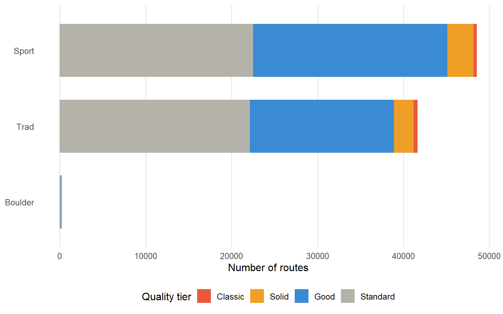
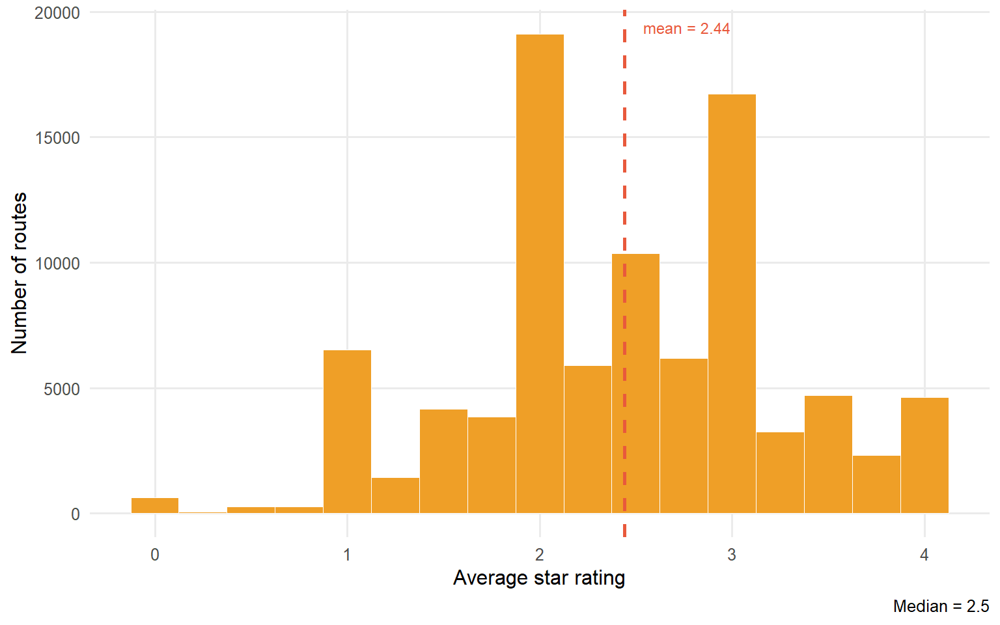
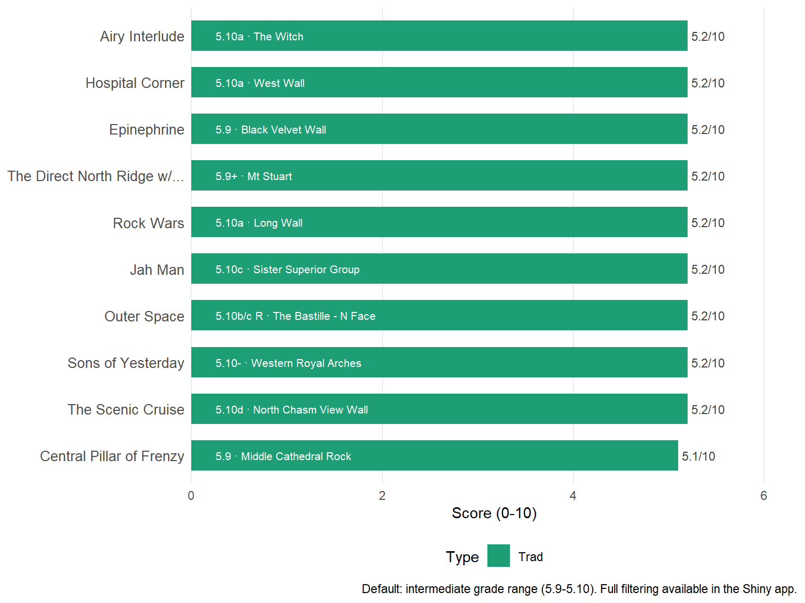

US Routes
90,408
Climbing Walls
13,446
States
47
Classic Routes
876
Avg Star Rating
2.4
This dashboard explores nearly 90,000 climbing routes across the United States sourced from Mountain Project, the largest crowd-sourced climbing database in North America.
The goal is to help climbers answer: Where should I climb? What routes match my ability? What are the best climbs near me?
What the data contains:- Route name, grade (YDS), and type — sport, trad, boulder, alpine
- Average star rating and number of votes from the climbing community
- GPS coordinates, pitch count, and route length
- Location hierarchy: wall > sub-area > region > state
- About the Data — dataset overview and geographic distribution
- Analysis — grade distributions and quality patterns
- Recommendations — top-scored routes using the Bayesian quality model
- Summary — key findings and links to further resources
For a fully interactive version with real-time filters by grade, state, and style, see the companion Shiny app in the GitHub repo.





Routes are ranked using a composite score (0-10) combining four signals:
- Bayesian quality (45%) — star rating adjusted for vote count; low-vote routes are pulled toward the global average so a single 4-star vote doesn’t outrank a 3.9-star route with 500 votes
- Grade match (30%) — peaks at the target experience level and falls off smoothly for routes that are too easy or too hard
- Classic bonus (15%) — extra credit for routes with 3.8+ stars and 20+ community votes
- Pitch bonus (10%) — small boost for multi-pitch routes
This dashboard set out to answer a simple question that every climber faces: where should I climb, and what routes are right for me? After exploring nearly 90,000 routes across the United States, several clear patterns emerged.
The data is heavily skewed toward the West. Colorado, California, and Utah together account for over a third of all routes. This reflects both the concentration of quality climbing terrain and the demographics of Mountain Project’s user base.
Moderate grades dominate. The 5.9-5.10 range has by far the most routes, with Classic-tier quality concentrated in the 5.10-5.11 window. The sweet spot for finding high-quality climbing with lots of options is the intermediate grade range.
Star ratings are unreliable without vote context. Many routes have high average stars but only one or two votes. The Bayesian scoring approach addresses this by pulling low-vote ratings toward the global mean of ~3.2 stars, so popular well-reviewed routes rank above obscure ones with a single lucky rating.
Sport climbing has the most routes; trad has the highest classic rate. Despite sport climbing dominating in raw numbers, trad routes punch above their weight in the Classic tier — reflecting the longer history and stronger community curation around trad destinations.
The recommendation system meaningfully reorders results. Simple star-rating filters return routes that look good on paper but may be at the wrong grade or poorly documented. The composite score — combining quality, grade fit, pitch count, and classic status — surfaces routes that are both high quality and appropriate for the user’s level. The full interactive version of this system is available in the companion Shiny app.
- Mountain Project — source dataset; route pages, area guides, conditions reports
- The Crag — alternative global climbing database
- OpenBeta — open-source climbing database with a public API
- Bayesian average ratings — the theory behind the weighted quality score used in this project
- Leaflet for R — interactive map documentation
- Quarto dashboards — how this dashboard was built
dplyr+stringr— data wrangling and location parsingggplot2— grade pyramid, type breakdown, star distributionleaflet— interactive climbing wall mapDT— searchable route recommendation table
Full source code, data, and companion Shiny app: github.com/mojo1019/STAT408Final